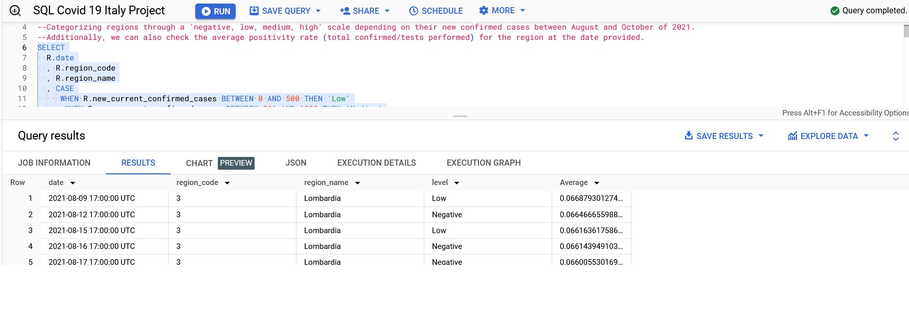
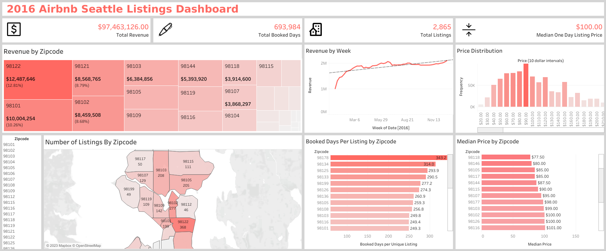
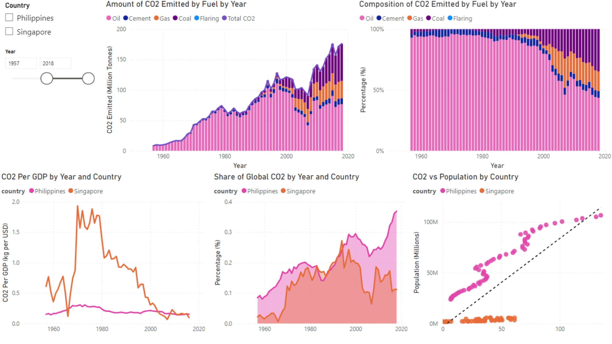
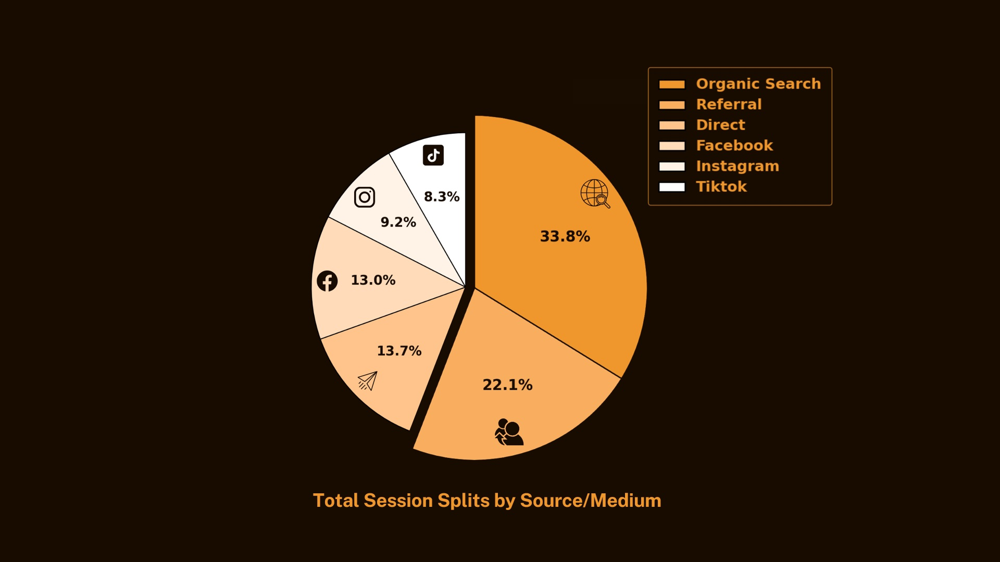

Covid-19 Data for Italy
table operation using Google Big Query for SQL

Table transformation was done using SQL to see certain parameters of data that we would want to know or check regarding this Covid 19 data for Italy. Comments are added to each section to better understand the goal output of that code block.
Two links are available:
1. Google Big Query - run the full function of the SQL code, but needs a Google BigQuery Account.
2. Kaggle - A more accessible platform to simply view the code.
2016 Seattle Airbnb
Listings Tableau Dashboard

Created a dashboard using Airbnb Seattle data from 2016. The goal was to first give a general idea of the current performance of Airbnb listings in Seattle, and a deeper analysis can be done through breaking it down by zipcode.
Open-source CO2 Emissions
PowerBI Dashboard

This is a dashboard showing a breakdown of CO2 Emissions for the Philippines and Singapore based on open-source emissions data. The aim of the dashboard is to better understand the composition of carbon emissions per country for a given range of years and its possible impacts.
Two files can be downloaded :
1. The .pbix file is dynamic, but PowerBI needs to be installed to use.
2. Pdf file is static, but can easily be accessed.
Visualization of an open-source
e-commerce data using Python and Canva

Using Python and Canva, visuals were created for performance categories of an open-source e-commerce data for our team analysis report. Gen AI was used in order to develop the codes.
The performance categories are conversion rates and 'source/medium' performance. Source/medium category refers to checking which platforms (like social media) the customers are coming from before visiting the website.
I've created a pdf compilation of all the visuals along with their respective codes for easy viewing, but the original files can still be accessed in their respective folders that are detailed inside the pdf.